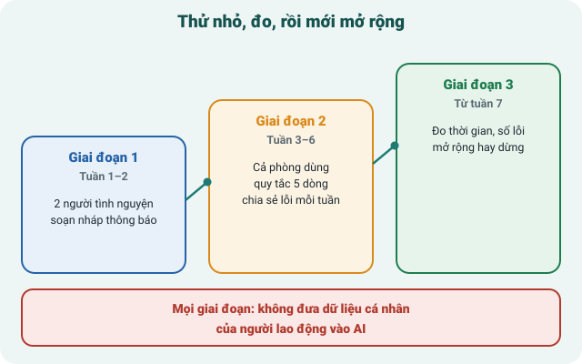

K6 · Thích ứng và bền bỉ › Bậc 5 Dẫn dắt
Dẫn đội qua thay đổi, gồm đưa AI vào công việc
Bài này làm Tờ 7: Kế hoạch thay đổi và Quy tắc dùng AI. Mẫu in. Người trong đội nên học Dùng AI an toàn (Bậc 3). Bài không tư vấn pháp lý; nguồn luật ghi ở cuối bài.
1. Mục tiêu
- Lập Kế hoạch thay đổi 6 bước: lý do, cái đổi và cái giữ, thử nhỏ, lo ngại, hỗ trợ, đo lại.
- Viết Quy tắc dùng AI của đội gồm 5 dòng: công cụ, dữ liệu, kiểm tra, ghi rõ, trách nhiệm.
2. Khởi động truy xuất
- Bốn phần của Thỏa thuận làm việc là gì?
- Ba câu hỏi xem lại cách phối hợp mỗi quý là gì?
Đáp án
- Vai trò; cách họp; chia việc không tên; quy tắc cho hoàn cảnh khác nhau.
- Điều gì giúp đội làm tốt; điều gì làm ai đó khó góp sức; một thay đổi nhỏ để thử.
Xem lại: Xây đội hòa nhập.
3. Giải thích
Thay đổi ở nơi làm việc thường gặp lo ngại. Mọi người sợ mất việc quen, sợ làm sai, sợ bị đánh giá kém. Lo ngại không được nghe sẽ thành chống đối ngầm.
Kế hoạch thay đổi có 6 bước.
- Lý do: vì sao phải đổi, nói bằng số liệu hiện tại.
- Đổi gì, giữ gì: nói rõ cả phần không đổi. Điều này giúp mọi người yên tâm hơn.
- Thử nhỏ: một nhóm, vài tuần, rồi mới làm cả đội.
- Nghe lo ngại: ghi lại từng lo ngại, trả lời công khai.
- Hỗ trợ: thời gian học, người hướng dẫn, giảm bớt việc trong lúc chuyển.
- Đo lại: so số liệu trước và sau, điều chỉnh nếu cần.

Giữ sức cho đội. Trong lúc chuyển, đội làm cả việc cũ và việc mới. Hãy tạm bớt việc ít quan trọng. Đừng thêm chỉ tiêu mới ngay tuần đầu.
Đưa AI vào đội cần quy tắc rõ. Không có quy tắc, mỗi người dùng một kiểu. Rủi ro lớn nhất là đưa dữ liệu không được phép vào công cụ.
Quy tắc dùng AI của đội (5 dòng)
- Công cụChỉ dùng công cụ đơn vị đã duyệt.
- Dữ liệuKhông đưa dữ liệu cá nhân, bí mật khách hàng, tài liệu mật.
- Kiểm traNgười dùng đọc lại, kiểm số liệu, nguồn trước khi gửi.
- Ghi rõGhi khi dùng AI nếu đơn vị hoặc khách yêu cầu.
- Trách nhiệmNgười gửi chịu trách nhiệm, không phải công cụ.
Việt Nam đã có Luật Bảo vệ dữ liệu cá nhân và Luật Trí tuệ nhân tạo. Quy tắc của đội phải theo quy định của đơn vị. Đơn vị dựa trên các luật này. Khi chưa rõ, hỏi bộ phận pháp chế hoặc người phụ trách dữ liệu.
4. Ví dụ tại nơi làm việc Việt Nam
Tình huống giả định. Chị Oanh là trưởng phòng hành chính nhân sự ở một nhà máy giày tại Đồng Nai. Công ty duyệt một công cụ AI để soạn văn bản. Phòng có 6 người, ba người lo sợ bị thay thế.
Chị làm Tờ 7. Lý do: soạn một thông báo nội bộ mất trung bình 2 giờ; mỗi tháng có khoảng 20 thông báo. Đổi gì, giữ gì: AI soạn nháp thông báo, quy trình chung; việc tư vấn người lao động, xử lý hồ sơ vẫn do người làm. Thử nhỏ: hai người tình nguyện thử trong 2 tuần.
Ở buổi họp, một người hỏi: "Có ai bị cắt việc không?" Chị trả lời công khai: thời gian tiết kiệm được dùng cho việc tư vấn, không cắt người trong đợt này. Chị ghi câu hỏi và câu trả lời vào biên bản.
Quy tắc của phòng ghi rõ: không đưa hồ sơ ứng viên, bảng lương, thông tin sức khỏe vào AI. Một người suýt dán danh sách người lao động vào công cụ. Người cùng nhóm nhắc lại dòng 2 của quy tắc.
Sau 6 tuần, thời gian soạn một thông báo giảm còn khoảng 40 phút. Phòng quyết định dùng tiếp.
Vì sao cách này tốt: lý do có số, có nói phần không đổi. Lo ngại được trả lời công khai. Quy tắc về dữ liệu rõ, nên cả nhóm nhắc nhau được.
5. Thực hành
Tình huống giả định. Bạn là trưởng nhóm kế toán 5 người ở một công ty thương mại tại Hà Nội. Công ty chuyển sang phần mềm kế toán mới từ tháng sau. Hai người lớn tuổi lo không theo kịp. Một người hỏi có dùng AI để đọc hóa đơn được không.
Lập Kế hoạch thay đổi 6 bước. Viết dòng "Dữ liệu" và "Kiểm tra" trong Quy tắc dùng AI cho nhóm.
Gợi ý 1
Nhóm có thể thử phần mềm mới với một phần việc nhỏ trước không? Ví dụ một loại chứng từ?
Gợi ý 2
Hóa đơn có thể chứa thông tin của khách hàng và đối tác. Ai đã duyệt công cụ AI đó?
Lời giải mẫu
- Lý do: phần mềm cũ ngừng hỗ trợ cuối năm; mỗi tháng mất khoảng 2 ngày nhập tay lại số liệu.
- Đổi gì, giữ gì: đổi nơi nhập liệu; giữ nguyên quy trình duyệt chứng từ và người duyệt.
- Thử nhỏ: tuần 1–2 chỉ nhập phiếu chi trên phần mềm mới, chạy song song phần mềm cũ.
- Lo ngại: gặp riêng hai người lớn tuổi, ghi điều họ lo; trả lời trong họp nhóm.
- Hỗ trợ: mỗi người 2 buổi học có hướng dẫn; tạm hoãn báo cáo phân tích tháng này.
- Đo lại: so số lỗi và thời gian nhập sau 4 tuần.
- Quy tắc AI, dòng Dữ liệu: chỉ dùng AI để đọc hóa đơn nếu công ty đã duyệt công cụ đó cho dữ liệu này.
- Quy tắc AI, dòng Kiểm tra: mọi số do AI đọc phải được đối chiếu với hóa đơn gốc trước khi ghi sổ.
(Số liệu là giả định.)
6. Tự kiểm tra
Chọn đáp án. Mỗi lựa chọn đều có giải thích.
Câu 1. Khi thông báo thay đổi, vì sao nên nói rõ cả phần "giữ nguyên"?
-
Chưa đúng. Mục đích không phải độ dài. Người nghe cần biết điều gì vẫn ổn định.
-
Đúng. Đúng. Khi biết phần không đổi, người ta tập trung vào phần cần học thay vì lo mọi thứ.
-
Chưa đúng. Phần giữ nguyên là thông tin cho đội, không phải để làm nhẹ đi khi xin duyệt.
Câu 2. Đội sắp đổi quy trình đóng gói. Cách triển khai nào hợp lý?
-
Chưa đúng. Làm cả xưởng ngay thì lỗi lan rộng, và lo ngại dễ thành chống đối.
-
Đúng. Đúng. Thử nhỏ giúp tìm lỗi sớm với chi phí thấp, và có số liệu để thuyết phục.
-
Chưa đúng. Chờ mọi người đồng ý có thể không bao giờ đến. Thử nhỏ có đo là cách tiến lên an toàn.
Câu 3. Một nhân viên muốn dán bảng lương của phòng vào công cụ AI miễn phí để tính tổng. Bạn nói gì?
-
Chưa đúng. Xóa sau không lấy lại được dữ liệu đã gửi đi. Bảng lương là dữ liệu cá nhân, cần được bảo vệ.
-
Đúng. Đúng. Theo dòng Dữ liệu và Công cụ của quy tắc, dữ liệu cá nhân chỉ xử lý bằng công cụ được phép.
-
Chưa đúng. Kết quả đúng không bù được rủi ro lộ dữ liệu của người lao động.
Câu 4. Bản báo cáo do AI soạn có một số liệu sai và đã gửi cho khách. Ai chịu trách nhiệm?
-
Chưa đúng. Công cụ không chịu trách nhiệm thay người. Quy tắc của đội nói rõ người gửi chịu trách nhiệm.
-
Đúng. Đúng. Theo dòng Kiểm tra và Trách nhiệm của quy tắc, người dùng đọc lại, kiểm số liệu và chịu trách nhiệm.
-
Chưa đúng. Lỗi đã đến tay khách. Phải có người nhận, sửa và báo lại cho khách.
7. Phản tư
- Lần gần nhất đội bạn có thay đổi, lo ngại nào không được ai trả lời?
- Hiện đội bạn đang đưa loại dữ liệu nào vào công cụ AI? Ai đã cho phép?
8. Áp dụng thật
Trong 7 ngày tới, chọn một thay đổi đội sắp làm. Làm Tờ 7. Nếu đội đã dùng AI, viết Quy tắc 5 dòng và đối chiếu với quy định của đơn vị.
Cập nhật lần cuối: 14/11/2026. Nguồn (tra cứu ngày 14/11/2026): Luật Bảo vệ dữ liệu cá nhân số 91/2025/QH15, Quốc hội thông qua ngày 26/6/2025, có hiệu lực từ 01/01/2026. Luật Trí tuệ nhân tạo số 134/2025/QH15, ban hành ngày 10/12/2025, có hiệu lực từ 01/3/2026. Bài chỉ nêu tên và ngày hiệu lực, không diễn giải điều khoản. Khi áp dụng, đọc văn bản gốc và hỏi pháp chế.
9. Siêu dữ liệu
| skill | K6 · Thích ứng và bền bỉ |
|---|---|
| level | Bậc 5 · Dẫn dắt |
| group | N5 |
| framework_map | WEF: Resilience, flexibility and agility; AI and big data; Leadership and social influence; SkillsFuture CCS: Adaptability; Digital Fluency; CSfW: 3e Work in a digital world; DigComp 3.0; LifeComp: P2 Flexibility (chỉ dẫn chiếu) |
| updated | 2026-11-14 |
Hoàn thành bài
Đánh dấu đã học để site gợi ý lịch ôn sau 1, 3 và 7 ngày. Dữ liệu chỉ lưu trên máy của bạn.
Lịch ôn gợi ý: